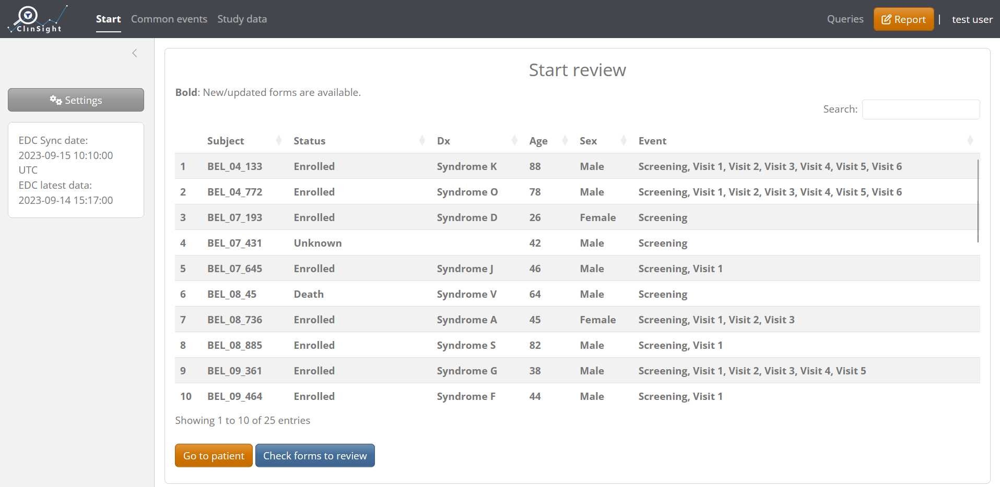
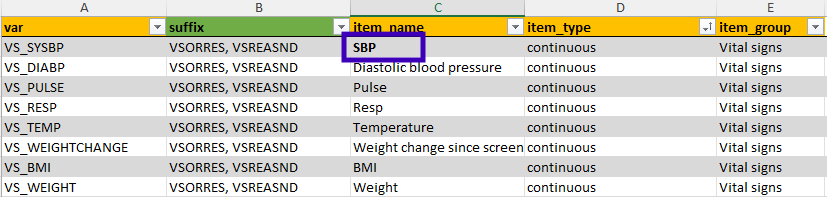
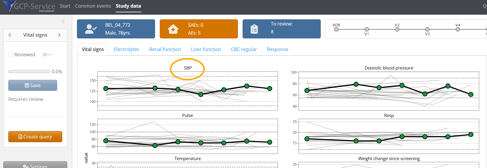

To get started, you can easily run and test ClinSight by using the
function clinsight::test_clinsight(). This function loads
all data in a temporary folder that will be cleaned up after use. If no
data is provided, “dummy” data will be used to run the application. Note
that this function is only meant for testing and development, and is a
wrapper around clinsight::run_app(), the primary function
to launch the app. Executing clinsight::run_app() directly
will create a database in the working directory that will record user
actions such as the study data’s review status. This database is
required for deployment in a production environment.
# Not run:
# If evaluated, this will run ClinSight with internal test data
test_clinsight()Once launched, the Start screen will look like the
following:

Create custom data and metadata
In order to use custom study data with ClinSight, first the raw data
needs to be in the correct format (see
below). Secondly, a ClinSight metadata file needs to be prepared so
that the app knows how to use the raw data. (see
create_clinsight_metadata() and
get_metadata(). Then, the raw data needs to be merged with
the metadata file (using merge_meta_with_data()) to create custom
ClinSight-compatible input data. All details about the
metadata template and how to customize it can be found in the
vignette("Metadata").
Raw data structure
Raw study data is expected to be in ‘long format’ with all columns
being of type character. Below is a table with the required
columns. Note that the column names shown below are flexible since they
can be customized (renamed) using the ‘column_names’ tab from the
metadata template as needed.
| Name | Description |
| site_code | Identifier for study site. |
| subject_id | Unique identifier for a subject |
| event_id | Identifies events within a study, such as study visits. |
| event_date | The date of the event. Should be convertible from a character vector to a valid date within R. |
| event_repeat | Counter containing a sequence number that increments if an event_id is repeated within the same subject. |
| form_id | Identifier for each form. Can be mostly ignored, since new form identifiers are set within ClinSight metadata. |
| form_repeat | Counter containing a sequence number that increments if a form is repeated within the same subject. |
| var | Name of the variable to use in ClinSight. Longer/more appropriate names will be specified in metadata. |
| item_value | Value of the variable (var) in question. |
| edit_date_time | The time at which the value was last edited. Important for efficient reviewing of the data within ClinSight. |
As an example, we will show raw data pre-installed with the package
that can be converted to ClinSight-compatible input
data.
raw_data <- get_raw_csv_data(system.file("raw_data", package = "clinsight"))
#> Adding synch time ' 2025-05-20 16:27:52 UTC ' as the attribute 'synch_time' to the data set.
head(raw_data)
#> # A tibble: 6 × 13
#> SiteCode SubjectId EventSeq EventId EventName EventDate FormId SubjectFormSeq
#> <chr> <chr> <chr> <chr> <chr> <chr> <chr> <chr>
#> 1 BEL08 BEL_08_885 1 COMMON… Any visit 2023-08-… AE 1
#> 2 BEL08 BEL_08_885 1 COMMON… Any visit 2023-08-… AE 1
#> 3 BEL08 BEL_08_885 1 COMMON… Any visit 2023-08-… AE 1
#> 4 BEL08 BEL_08_885 1 COMMON… Any visit 2023-08-… AE 1
#> 5 BEL08 BEL_08_885 1 COMMON… Any visit 2023-08-… AE 1
#> 6 BEL08 BEL_08_885 1 COMMON… Any visit 2023-08-… AE 1
#> # ℹ 5 more variables: EditDateTime <chr>, EventLabel <chr>, ItemName <chr>,
#> # ItemValue <chr>, ItemId <chr>Merge and prepare data
When metadata in the Excel sheet is adjusted properly for
study-specific needs (see vignette("Metadata")), it should
be converted to an R object with the function
get_metadata():
meta_custom <- get_metadata(system.file("metadata.xlsx", package = "clinsight"))Next step in preparing data for ClinSight is merging the metadata
object with the raw data using the function
merge_meta_with_data(). This will output an informative
error message if an incompatible change was made.
merged_study_data <- merge_meta_with_data(raw_data, meta_custom)
#> applying function 'identity' to the data
#> order can be derived from metadata
#> Created the following event_label and event_name combinations:
#> # A tibble: 9 × 2
#> event_label event_name
#> <fct> <chr>
#> 1 SCR Screening
#> 2 V1 Visit 1
#> 3 V2 Visit 2
#> 4 V3 Visit 3
#> 5 V4 Visit 4
#> 6 V5 Visit 5
#> 7 V6 Visit 6
#> 8 NA Any visit
#> 9 NA Exit
#> applying function 'apply_study_specific_suffix_fixes' to the data
#> Using user supplied "suffix_names" instead of deriving.
#> applying function 'apply_edc_specific_changes' to the data
#> Using suffix '_ITEM_TO_MERGE_WITH_PAIR' to detect item pairs
#> Verifying if following items need merging with their defined pair:
#> CM Name, CM Frequency, AE Treatment action, CM Unit, CM Route
#> merging item 'CM Name' with its matched pair
#> merging item 'CM Frequency' with its matched pair
#> merging item 'AE Treatment action' with its matched pair
#> merging item 'CM Unit' with its matched pair
#> merging item 'CM Route' with its matched pair
#> applying function 'apply_study_specific_fixes' to the dataFinally, we can test launch ClinSight with our custom data and metadata:
#Not run
test_clinsight(merged_study_data, meta_custom)Notice that the application shows a warning if some variables defined in the metadata are not available in the actual data, similar to the message below. It is useful to check this output carefully to see if any variable names were entered incorrectly.
# Warning in check_appdata(app_data, meta) :
# Not all variables defined in metadata are present in the data.
# var item_name
# 1 AE_AESER_AEOUT SAE outcome
# 2 WHO_WHOCAT WHO.subclassification
# 3 DMOD_DAT DoseModificationDate
# 4 DMOD_REAS DoseModificationReason
# 5 DMOD_DOSE DoseModificationNewDoseTo iteratively improve the metadata, simply stop the application,
adjust the metadata, merge it again with the raw data, and re-launch
using test_clinsight(). For example, if we want to change
the name of ‘Systolic blood pressure’ to ‘SBP’, we can adjust this in
the Excel file, save the metadata and use get_metadata()
again:

#Not run
adjusted_study_data <- merge_meta_with_data(raw_data, meta_custom_adjusted)
test_clinsight(adjusted_study_data, meta_custom) If changed correctly, the name of the variable will change accordingly in the application:
